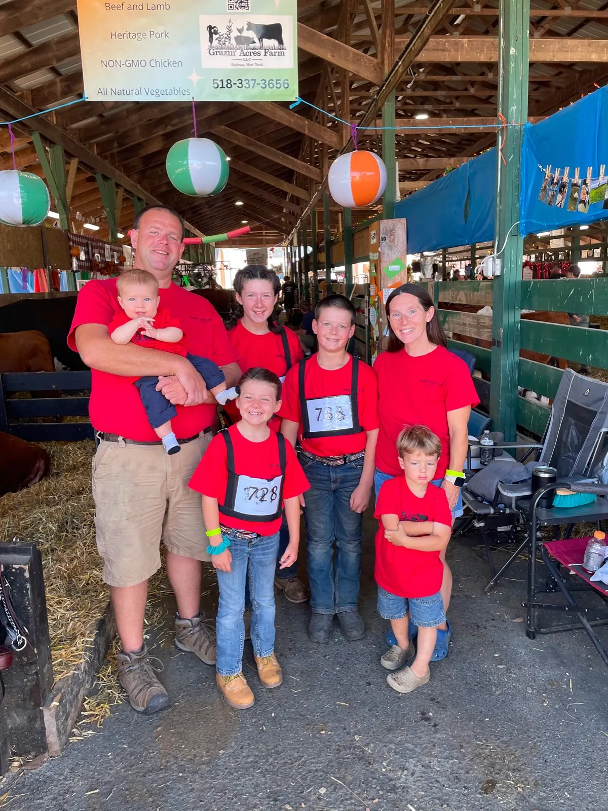
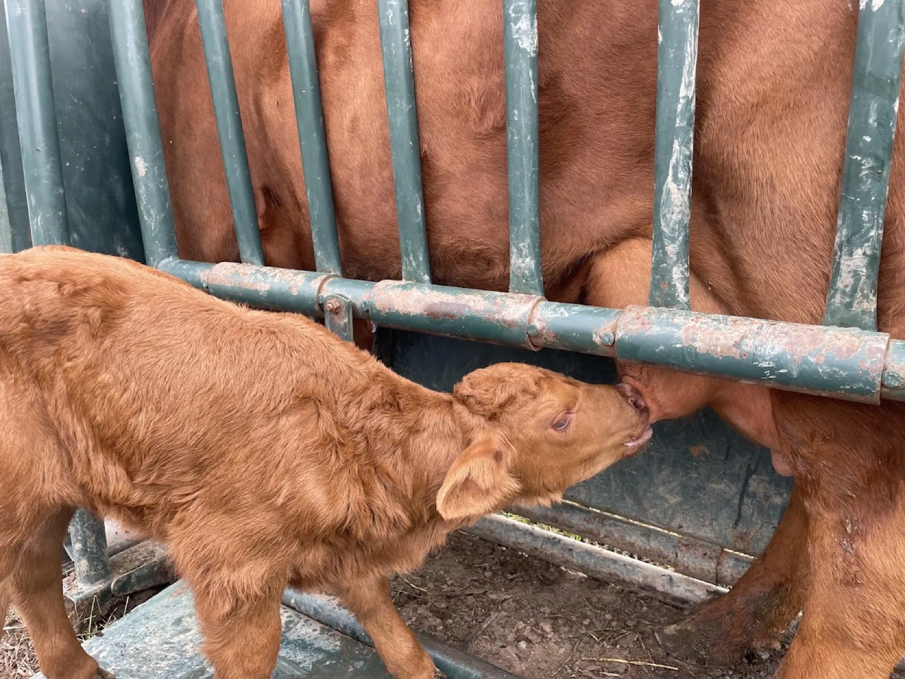

A small piece of land, a few beef cattle and ‘Pinky’ the boar.
That is how we started in 2010. Since then we have expanded every year to what is now 4 different farm locations, with fully sustainable livestock including beef cattle, pigs, chickens and lamb, and most recently a huge variety of fresh vegetables.
As kids, we grew up on our own family farms using regenerative agriculture, so when it came time to start our own farm, this practice was just second nature. We proudly follow strict animal welfare protocol and provide all natural, non-GMO meats and veggies.
What is regenerative agriculture?
Farming and grazing practices that rebuild the soil’s organic matter and restore degraded soil biodiversity. The result is carbon draw-down, improvements on the water cycle and healthier soil.